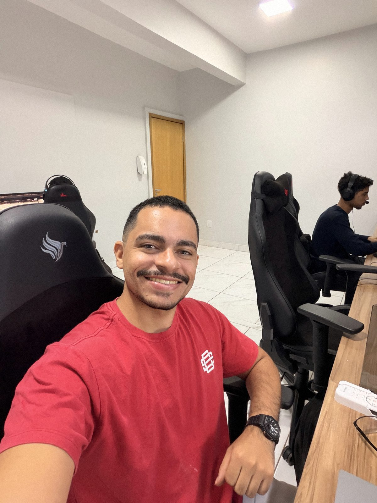
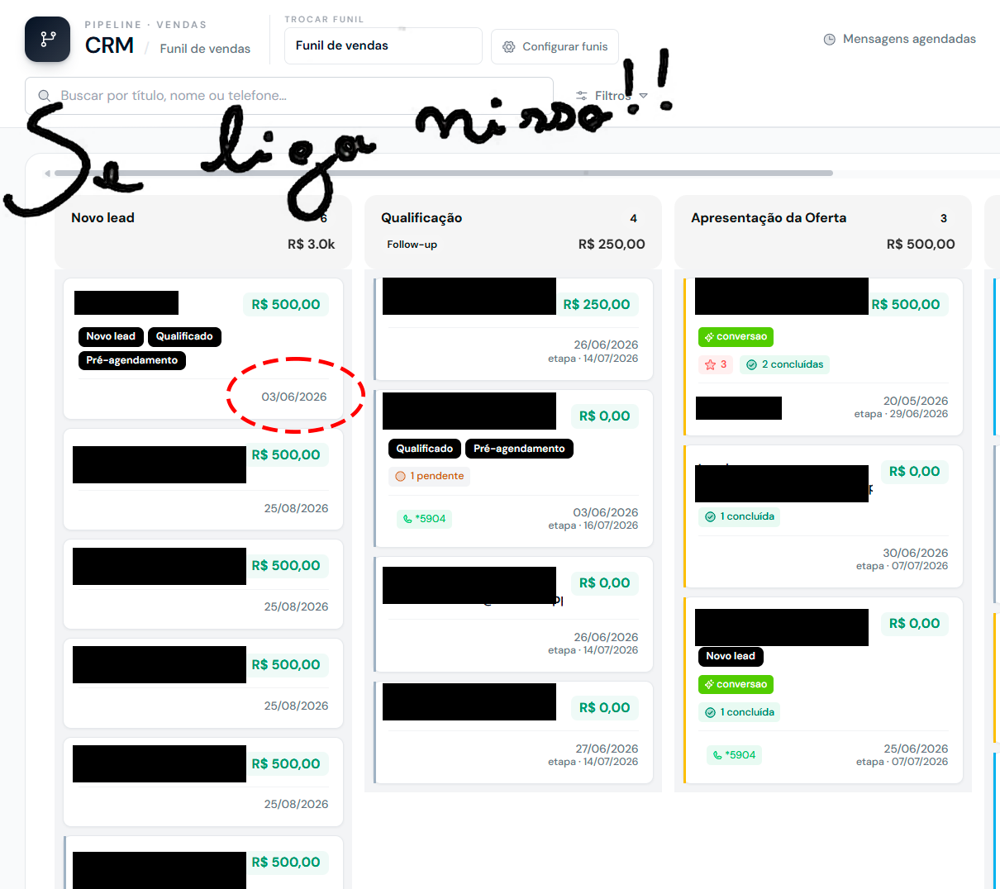
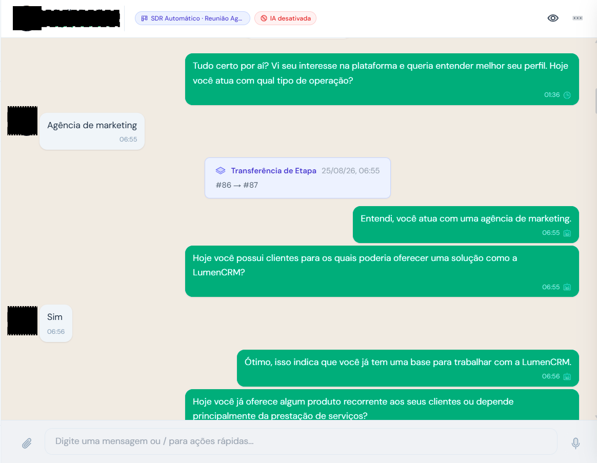

Você prospectou, fez reunião, negociou, fechou e construiu confiança. Depois disso, a maioria das agências vende uma única solução e volta pro mercado procurar outra empresa. Eu trabalho a parte contrária dessa conta.
Quem responde sou eu. Sem formulário e sem robô de vendas.

Mesmo formato dos vídeos do perfil: take único, sem corte, sem teleprompter.
Se você chegou aqui pelo meu Instagram, provavelmente já tem agência, já tem carteira e já entrega resultado. E provavelmente já viveu esse ciclo: pra crescer, fechar mais cliente. Mais cliente, mais atendimento, mais operação, mais equipe, mais complexidade.
Tem outra pergunta que quase ninguém faz: como fazer cada cliente que já confia em você valer mais?
Seu cliente provavelmente já paga por CRM, por automação, por alguma ferramenta comercial. Essa receita está indo pra outra empresa — uma empresa que não gera a demanda dele, não conhece a operação dele e não tem a confiança que você tem.
Isso não significa transformar sua agência em empresa de software. Significa enxergar melhor os problemas que a sua própria carteira já tem, e transformar alguns deles em receita recorrente.
Toca no que mais parecer com a sua realidade. Abre a conversa comigo já no ponto certo.
Você entrega o lead no horário certo e ele esfria dentro do WhatsApp do cliente. O problema não é a mídia. É o tempo de resposta.
O lead não respondeu e virou perda. Follow-up é a coisa que todo mundo sabe que precisa fazer e ninguém sustenta na mão.
Sem funil, sem dono, sem etapa. Aí toda reunião de resultado vira discussão sobre a qualidade do lead em vez de conversa sobre venda.
Uma pra disparo, uma pra CRM, uma pra agenda. Dinheiro saindo todo mês para empresas que não têm relação nenhuma com o resultado dele.
Prints reais, com as minhas marcações, de coisas que a gente ajusta em implantação.

Esse lead entrou em 03/06 e continua em “Novo lead” até hoje. A agência entregou. O problema começou depois dela.

Conversa real: a IA pergunta, o lead responde “agência de marketing”, e a oportunidade muda de etapa sozinha. 6h55 da manhã.
Não sou o cara que descobriu inteligência artificial ano passado e virou consultor. Sou cofundador da Lumen Company: eu construo e opero a estrutura por trás — e o que eu falo no Instagram sai de problema real de implantação, de suporte e de reunião com dono de agência.
Por isso eu não vendo bot. Vendo processo comercial que fica de pé depois que o entusiasmo passa.
Hoje são mais de 300 agências e 8.000 usuários operando nessa estrutura. Um dos parceiros passa de R$ 400 mil por mês usando ela como base comercial. Não é o normal, é o teto — mas existe.
Você manda mensagem e quem responde sou eu, não um atendente.
Eu te faço três perguntas: quantos clientes você atende, o que você vende hoje e qual daqueles problemas mais aparece na sua carteira.
Se fizer sentido, a gente marca 30 minutos. Se não fizer, eu te falo na hora — sem te empurrar pra um funil.
Respondo pessoalmente, normalmente no mesmo dia.